매일 자동으로 도는 시스템
발표자 심슨은 16년 차 퍼포먼스 마케터예요. '똑똑하고 게으른 사람이 가장 멀리 간다'는 말로 영상을 열어요. 부지런한 사람은 모든 일을 직접 하다가 본인이 병목이 돼요. 게으른 사람은 시스템을 만들고, 그 시스템이 자기보다 더 잘 일하게 해요. 이 영상은 그 시스템을 메타 광고 운영에 적용한 모습이에요.
슬라이드의 네 칸이 시스템이 걸쳐 있는 자리예요. 왼쪽 위 Slack의 #ads-routines 채널로 루틴 네 개의 알림이 오고, 오른쪽 위 터미널에서는 Claude 루틴이 실행돼요. 아래 두 칸은 결과물이에요. dashboard.html이 저절로 갱신되고, 크리에이티브 계획은 creative_plan_*.json 파일로 쌓여요.
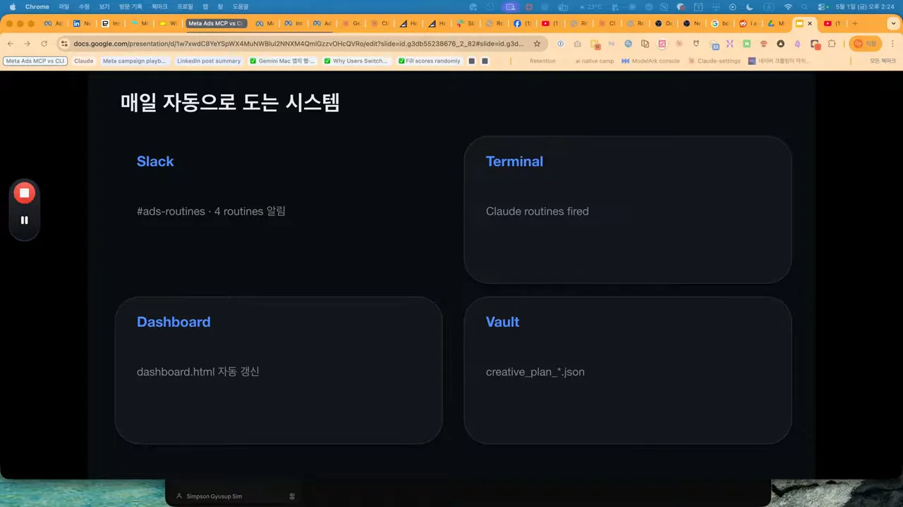
아침에 Slack으로 오는 것
발표자는 화면에서 아무것도 누르지 않아요. 정해진 시각이 되면 Claude 루틴이 알아서 돌고, 분석 결과를 Slack으로 보내요. 아래 메시지에서 '아침 시그널 브리핑' 블록을 보면 체크 표시 세 줄이 있어요. 18–24세 지출 비중 3.5%(기준선 3.9%), 인스타그램 91% 대 페이스북 9%의 지면 분포, 어제 지출 $51.95가 모두 정상 범위라는 뜻이에요. 위아래의 '주간 Incrementality' 블록은 루틴 3의 결과로, ROAS(Return On Ad Spend) 7.46배 캠페인을 'True winner'로 표시했어요.
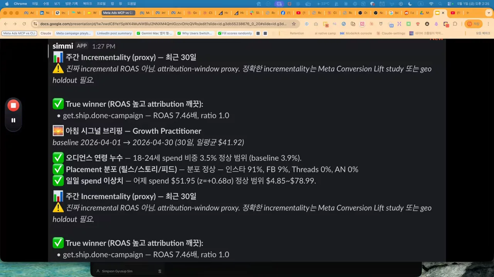
같은 결과는 대시보드에도 쌓여요. 맨 위 줄이 루틴 1의 세 가지 점검이고, 가운데 표가 루틴 2의 광고별 피로도예요. 표 첫 줄의 meta-reel-compilation-G-v5만 노란 'WARN' 라벨이 붙었고, 오른쪽에 '광고 일시정지' 명령이 추천 액션으로 적혀 있어요. 나머지 세 광고는 초록 'HEALTHY'예요. 발표자는 이 대시보드를 웹에 올릴 수도 있지만, 혼자 쓴다면 로컬에서 돌리는 것으로 충분하다고 해요.
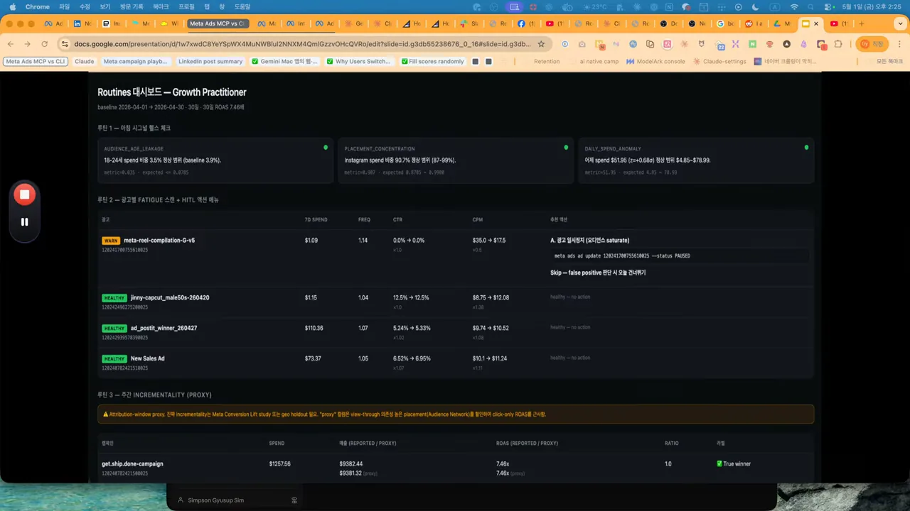
예전에는 이 점검에 하루 4시간이 걸렸는데, 지금은 Slack을 보며 커피 마시는 아침 30분이면 끝난다고 해요.
발표자는 자신을 강사가 아니라 매일 광고를 돌리고 부트캠프를 운영하는 실무자라고 소개해요. 부트캠프를 5개월째 운영하다 보니, 강의를 듣던 사람들이 어느 순간 직접 만들기 시작하는 '빌더 모드'로 바뀌더라는 거예요. 그래서 이 영상도 보고 끝내지 말고 직접 만들어 보라고, 막히면 댓글로 묻고 만든 결과를 나누자고 부탁해요.
세 도구와 네 가지 원칙
시스템을 보기 전에 발표자는 도구 세 가지부터 정리해요. 셋의 차이를 알면 나머지가 다 보인다고 해요.
Ads Manager, Ads CLI, Ads MCP
슬라이드는 세 도구를 여섯 가지 기준으로 나란히 놓았어요. 눈여겨볼 줄은 '재현성'이에요. Ads Manager는 사람마다 클릭하는 방식이 달라 결과가 달라지고, CLI는 100% 같은 결과가 나와요. MCP는 매번 자연어로 묻기 때문에 답이 조금씩 달라지는 '비결정적' 도구예요.
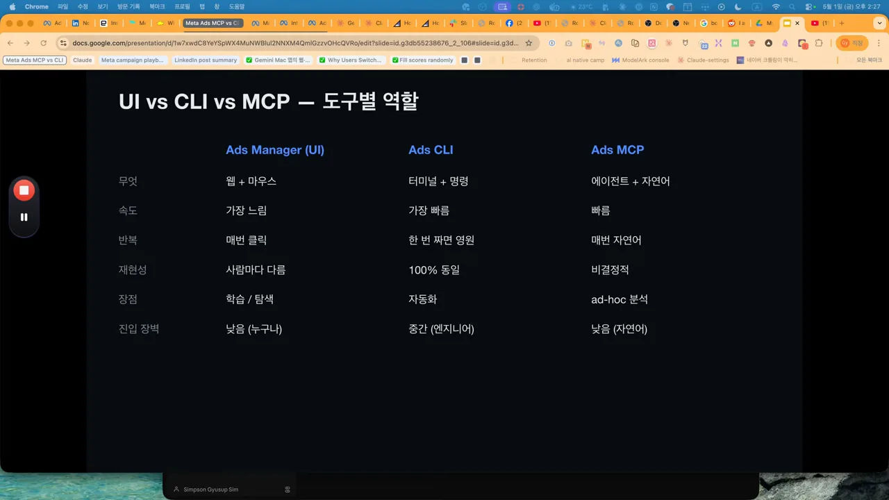
| 도구 | 무엇으로 다루나 | 잘하는 일 | 발표자의 평가 |
|---|---|---|---|
| Ads Manager | 웹 화면과 마우스 | 배우기, 둘러보기 | 누구나 쓰지만 매일 반복하기엔 너무 느려요 |
| Ads CLI | 터미널 명령 | 자동화 | 한 번 짜면 1초 안에 끝나요. 명령에 익숙해지는 시간이 들어요 |
| Ads MCP | AI 에이전트와 자연어 | 그때그때 하는 분석 | '어제 ROAS 왜 떨어졌어?'처럼 물을 수 있어요. 진입 장벽이 낮아요 |
발표자는 Meta Ads CLI와 MCP가 4월 29일에 나왔다고 말해요. 오늘 시스템에서는 CLI가 자동화의 뼈대, MCP가 분석 층을 맡고, 웹 화면은 '졸업'한다고 해요.
Claude Code를 쓰지 않아도 괜찮아요. MCP는 표준이라 연결하는 명령 한 줄만 달라요. 화면의 파란 글씨는 OpenClaw에 메타 광고 MCP를 등록하는 명령이에요. 서버 주소 mcp.facebook.com/ads는 어느 도구에서든 같아요. 발표자는 Cursor, ChatGPT, Codex도 같은 식으로 쓸 수 있다고 해요.
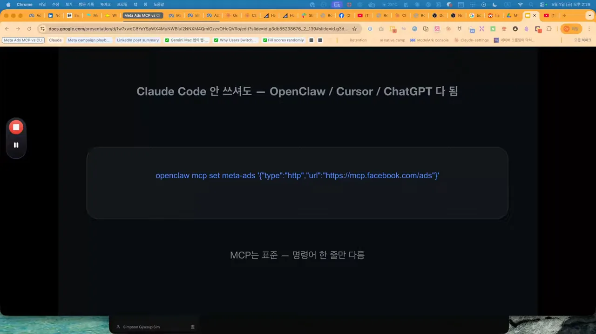
전체 시스템을 한 장으로
맨 위의 루틴 네 개(아침 시그널, Fatigue 스캔, Incrementality Gap, Creative Flywheel)가 Meta Ads MCP로 데이터를 받아요. 가운데 주황 타원의 Cloud Agent(Claude)가 분석하고, 결과를 Slack #ads-routines로 보내요. 맨 아래 '마케터 HITL'에서 양옆 화살표가 다시 루틴으로 돌아가요. 사람이 판단한 결과가 다음 루프에 반영된다는 뜻이에요. 발표자는 이 그림도 GPT(Generative Pre-trained Transformer) 이미지 2.0으로 만들었는데, 데스크톱 앱이 아니라 Claude Code에 시켜서 만들었다고 해요. 그만큼 터미널을 거의 떠나지 않는다는 거예요.
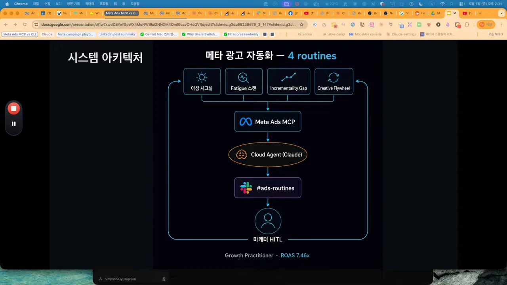
운영 원칙 네 가지
발표자는 이 그림을 띄워 둔 채 원칙 네 가지를 말로 설명해요. 화면에는 원칙이 따로 정리돼 있지 않아서 아래에 그림으로 옮겼어요. 첫째, 데이터 가져오기와 실행은 CLI가 해요. 인증, 페이지 나누기, 에러 처리를 CLI가 대신하니 Marketing API(Application Programming Interface)를 직접 부르지 않아요. 둘째, AI는 분석과 추론만 해요. 광고 소재 업로드, 규칙에 따른 켜고 끄기, 예산 올리기도 기술적으로는 되지만 아직 맡기지 않아요. 셋째, 모든 결정은 휴먼 인 더 루프예요. 넷째, 메타의 광고 알고리즘인 안드로메다 관점의 분석을 별도 층으로 둬요.
등록된 루틴 네 개
claude.ai/code/routines에 들어가면 루틴 네 개가 떠 있어요. 오른쪽 파란 글씨가 실행 시각이에요. 매일 두 개, 매주 월요일 두 개예요. 이 루틴은 클라우드에서 돌기 때문에 노트북이나 맥미니가 꺼져 있어도 실행돼요.
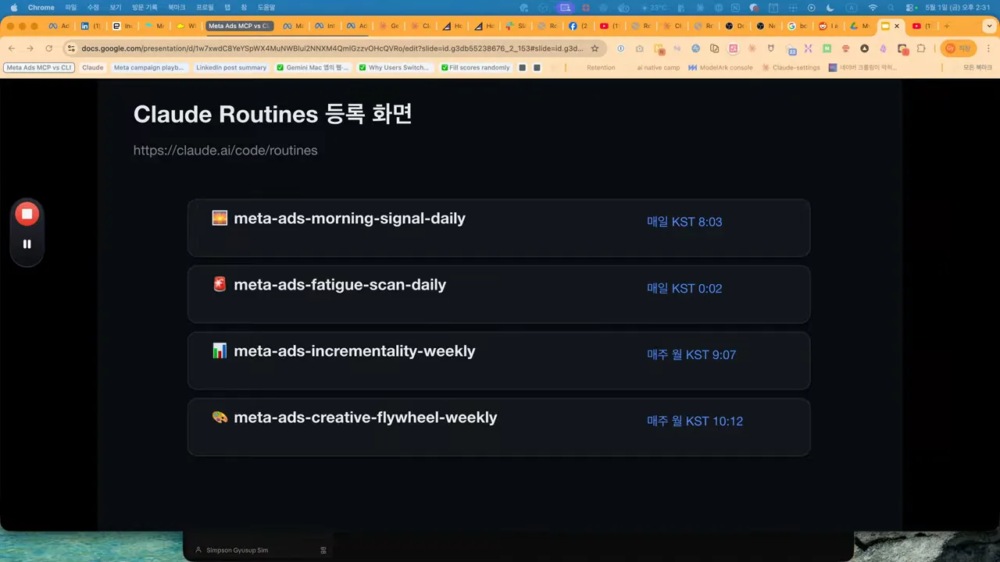
| 루틴 | 언제 | 무엇을 보나 |
|---|---|---|
| 1. 아침 시그널 | 매일 8시 | 어제 데이터의 신호 품질(연령, 지면, 지출) |
| 2. 피로도 스캔 | 매일 0시 | 광고별 피로도 네 가지 신호 |
| 3. 증분 갭 | 매주 월요일 9시 | 두 어트리뷰션 설정의 ROAS 차이 |
| 4. 크리에이티브 플라이휠 | 매주 월요일 10시 | 테스트 우승·탈락 후보와 다음 가설 |
루틴 1: 아침 시그널 브리핑
루틴 1은 매일 아침 8시에 돌아요. 광고 성과가 아니라 어제 들어온 데이터의 '신호 품질'이 깨졌는지를 봐요. 슬라이드의 Slack 메시지에는 30일 일평균 지출 $41.92를 기준선으로 두고, 세 가지 점검이 모두 초록 체크로 와 있어요.
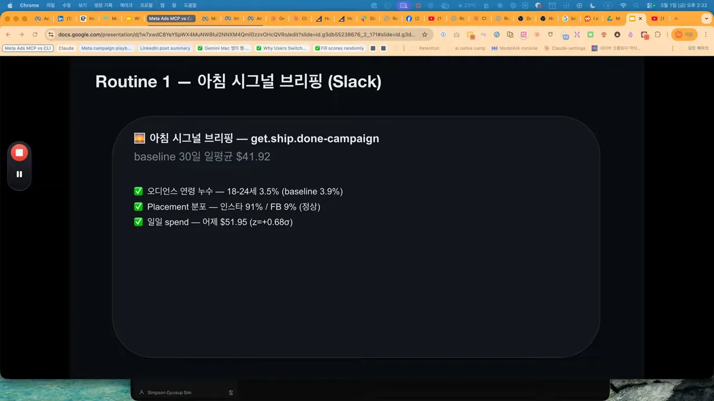
오디언스 연령 누수
18–24세에게 쓴 지출 비중을 봐요. 이 캠페인의 기준선은 3.9%이고, 크게 넘으면 알림이 와요. 대시보드에는 정상 상한이 7.85%로 찍혀 있어요. 발표자의 설명은 이래요. 18–24세는 클릭은 잘하지만 구매는 잘 안 해요. 알고리즘이 클릭 같은 값싼 대리 신호를 쫓아 이 연령대로 쏠리면 ROAS가 무너져요. 그래서 이 비중이 튀는 것을 '알고리즘이 엉뚱한 신호를 배우고 있다'는 경보로 써요.
플레이스먼트 분포
인스타그램과 페이스북 같은 플랫폼 비중뿐 아니라, 릴스·스토리·피드 같은 지면별 비중, 곧 플레이스먼트까지 봐요. 한쪽으로 너무 몰리면 같은 사람에게 같은 형식만 반복되니 피로도 위험 신호로 봐요. 발표자는 요즘 다들 릴스형 광고를 많이 만들지만, 피드나 다른 인스타그램 지면도 여전히 강하다고 해요. ROAS가 릴스보다 좋은 경우를 많이 봤다는 거예요.
하루 지출 이상치
어제 쓴 돈이 평소와 얼마나 다른지를 z-점수로 재요. 발표자는 30일 평균 약 40달러, 표준편차 약 14달러인 계정을 예로 들어요. z-점수가 2.5를 넘으면 위험으로 봐요. 아래 그림은 Slack 메시지의 실제 숫자를 한 줄 위에 그린 거예요. 어제 $51.95는 평균보다 조금 높지만 정상 범위 $4.85~$78.99 한가운데 있어요.
지출이 범위를 벗어났을 때 원인은 보통 셋 중 하나라고 해요. 결제 문제, 전환 이벤트 추적 문제, 광고 승인 보류예요. 한마디로 루틴 1은 '어제 신호 품질이 깨졌으면 알려 주는' 루틴이에요.
루틴 2: 광고별 피로도 스캔
루틴 2는 매일 자정에 돌아요. 캠페인 전체가 아니라 광고 하나하나가 식상해졌는지를 봐요. 슬라이드 표의 가운데 주황 열이 '경고', 오른쪽 빨간 열이 '위험' 기준이에요.
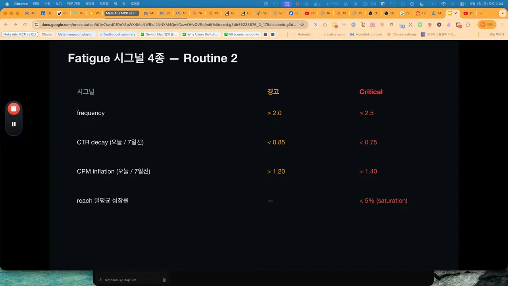
| 신호 | 위험 기준 | 무슨 뜻인가요 |
|---|---|---|
| 프리퀀시 | 2.5 이상 | 같은 사람에게 너무 자주 보여 주고 있어요 |
| CTR 하락 | 7일 전의 75% 미만 | 광고가 식상해졌어요 |
| CPM 상승 | 7일 전보다 40% 넘게 상승 | 같은 사람에게 노출하느라 비용이 올랐어요 |
| 도달 성장률 | 하루 5% 미만 | 새로 보여 줄 사람이 다 떨어졌어요(포화) |
신호 네 개를 하나의 라벨로 묶는 규칙도 있어요. 발표자는 이 부분이 다른 루틴과 결정적으로 다르다고 해요.
flowchart LR
A["광고별 신호 4개 점검"] --> B{"위험 신호가 2개 이상?"}
B -- "예" --> C["위험 라벨"]
B -- "아니요" --> D{"위험 1개 또는 경고 2개?"}
D -- "예" --> E["경고 라벨"]
D -- "아니요" --> F["정상"]
C --> G["Slack에 수치와 액션 메뉴"]
E --> G
G --> H["사람이 검토 후 복사해서 실행 또는 건너뛰기"]
경고가 오면 사람이 결정해요
경고 메시지에는 광고 이름과 함께 프리퀀시, CTR, CPM 변화가 같이 와요. 그 아래 액션 메뉴가 텍스트로 붙어요. 'A'는 광고 일시정지이고, 바로 붙여 넣어 실행할 수 있는 CLI 명령이 적혀 있어요. 'Skip'은 잘못 잡힌 경고라고 판단하면 오늘은 건너뛰는 선택지예요. 맨 아래 회색 줄이 핵심이에요. 자동 실행은 하지 않고, 사람이 붙여 넣은 뒤 직접 실행해요.
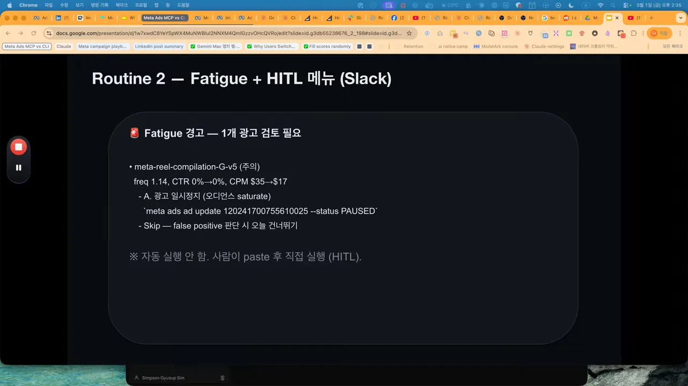
왜 굳이 사람을 거칠까요. AI가 광고를 자동으로 끄면 되돌릴 수 없는 일이 생길 수 있어서예요. 어제 시작한 새 광고를 데이터가 부족한데도 피로하다고 잘못 판단하면, 그 광고는 그대로 죽어요. 사람이 보면 '어제 시작이라 데이터가 부족하니 건너뛰자'고 바로 판단할 수 있어요.
발표자는 이런 판단을 마케터의 암묵지라고 불러요. 이걸 명시지로 바꿔 AI에게 넘기면 그것도 자동화할 수 있다고 해요. 위의 기준표가 바로 그렇게 감을 숫자로 옮긴 결과예요.
루틴 3: 어트리뷰션 설정 갭
루틴 3은 매주 월요일 9시에 돌아요. 같은 캠페인을 두 가지 어트리뷰션 설정으로 셌을 때 숫자가 얼마나 다른지를 봐요.
슬라이드의 위 칸 7d_click + 1d_view는 메타가 기본으로 주는 전통적인 방식이에요. 광고를 클릭하고 7일 안에, 또는 보고 1일 안에 일어난 전환을 다 세요. 많은 마케터가 여전히 이 방식으로 보고해요. 아래 초록 칸 incremental은 메타가 새로 밀고 있는 설정이에요. 메타가 자체 신호로 '정말 광고 때문에 생긴 전환'이라고 판단한 것만 세요. 두 칸 사이의 주황 글씨가 이 루틴이 재는 '갭', 곧 보고 방식의 차이예요.
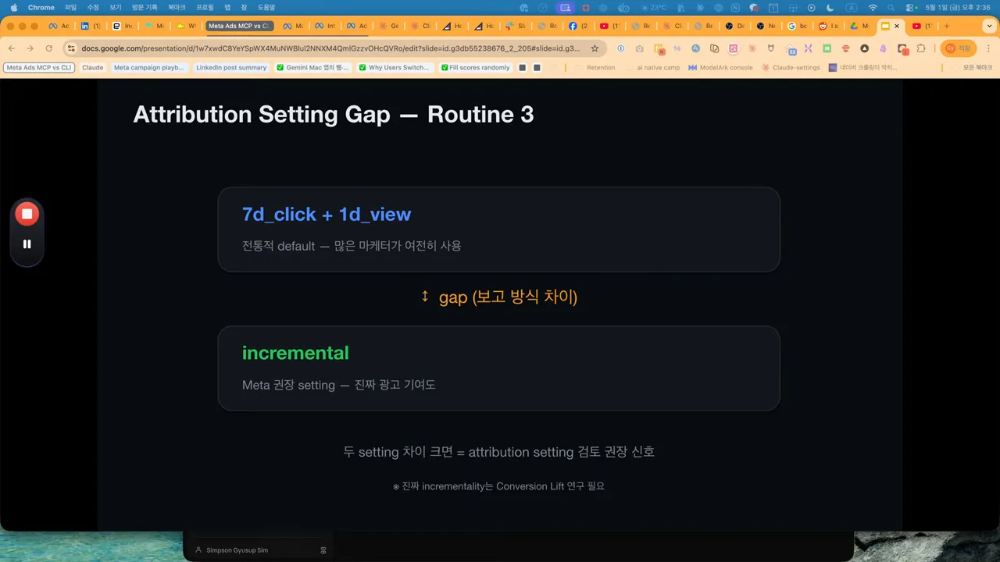
발표자는 여기서 솔직하게 선을 그어요. 이 갭은 진짜 증분 측정이 아닐 수 있다는 거예요. 진짜 증분은 전환 리프트 연구나 지오 홀드아웃 실험을 해야 나와요. 이 루틴은 그 전 단계의 대리 지표 정도로 보면 된다고 해요. 슬라이드 맨 아래 작은 글씨도 같은 말을 해요.
월요일에 오는 Slack 메시지는 이렇게 생겼어요. 전통 방식 ROAS가 7.46배, 증분 설정 ROAS가 9.72배이고, 둘의 비율(gap ratio)이 0.77이에요. 해석 줄에는 '두 설정 차이가 크지 않고 클릭이 이끄는 캠페인일 가능성이 높다'고 적혀 있어요.
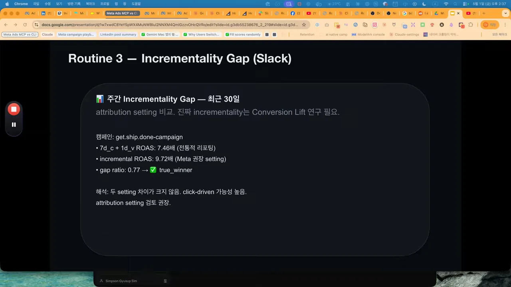
갭이 더 컸다면 어트리뷰션 설정을 증분으로 바꿔 더 정확한 그림을 보는 게 낫다고 해요. 이 리포트를 매주 받으면, 캠페인별로 지금 보고 방식이 실제 변화를 제대로 담고 있는지 점검할 수 있어요.
루틴 4: 크리에이티브 테스팅 플라이휠
루틴 4는 매주 월요일 10시에 돌아요. 발표자는 Admiral Media의 크리에이티브 테스팅 플라이휠을 한국 마케터 방식으로 다시 짰다고 해요. Admiral Media는 모바일 앱 UA(User Acquisition) 분야에서 큰 예산을 운영하는 곳이에요.
다섯 단계가 한 바퀴
슬라이드의 다섯 칸이 한 사이클이에요. 칸마다 아래 작은 글씨가 그 단계에서 지킬 기준이에요. 가설 설계 → AI로 한 달에 변형 100개 이상 양산 → 균형 노출 강제 → 하위 전환 기준으로 신호 해석 → 우승 요소를 다음 가설로. 아래 문장 '각 사이클이 다음 사이클의 가설을 만든다'가 이 구조의 요점이에요.
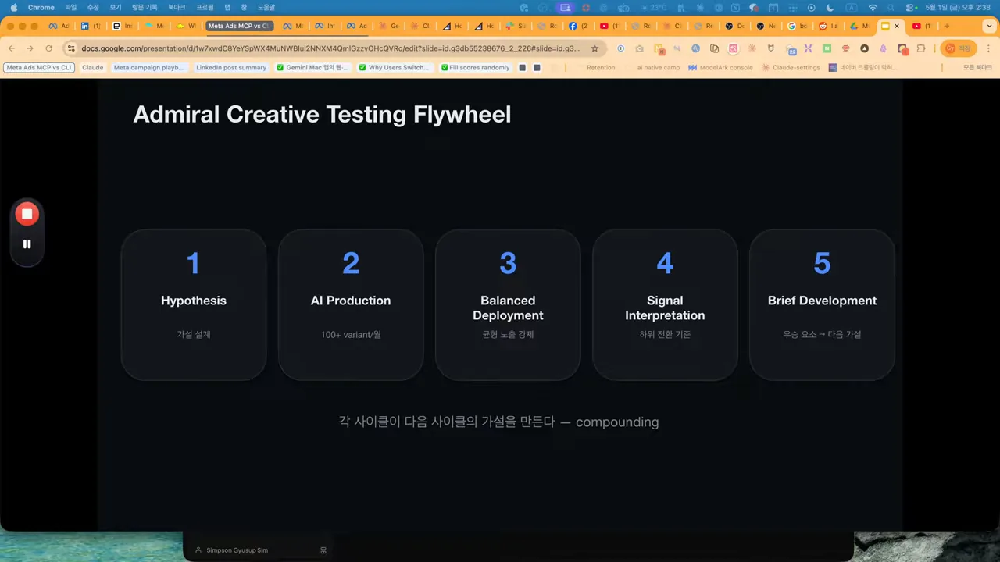
단계마다 발표자가 덧붙인 설명이 있어요.
- 가설 설계 — 어떤 훅이 먹힐지 가설부터 세워요.
- AI 양산 — 한 달에 변형 100개 이상은 사람 디자인으로는 절대 불가능한 양이라 AI가 만들어야 해요.
- 균형 노출 — 모든 변형에 노출을 공정하게 나눠요. 어드밴티지+가 초반 1등에게 노출을 몰아주지 못하게 하는 전략이에요. 발표자는 메타를 믿고 몰아주는 쪽은 ROAS를 잘 내려는 선택이고, 균형 노출은 테스트를 위한 선택이라고 봐요.
- 신호 해석 — CTR이 아니라 하위 전환으로 우승자를 골라요.
- 다음 브리프 — 이번 우승자의 공통 요소를 뽑아 다음 사이클 가설을 만들어요. 사이클이 쌓일수록 복리처럼 좋아져요.
핵심 원칙 네 가지
슬라이드의 네 칸은 테스트 판정을 망치지 않기 위한 규칙이에요. 1번은 훅·바디·CTA(Call To Action)를 한꺼번에 바꾸지 말라는 거예요. 무엇 때문에 이겼는지 알 수 없게 되니까요. 2번은 노출 1,000회 전에는 판정하지 말고 5,000회 이상을 권한다는 거예요. 노출 200회에서 끄면 우연한 흔들림에 끌려가요. 3번은 구매 전환율(purchase CVR(Conversion Rate))이 CTR보다 우선이라는 거예요. 4번은 어드밴티지+가 고른 우승자를 그대로 믿지 말라는 거예요.
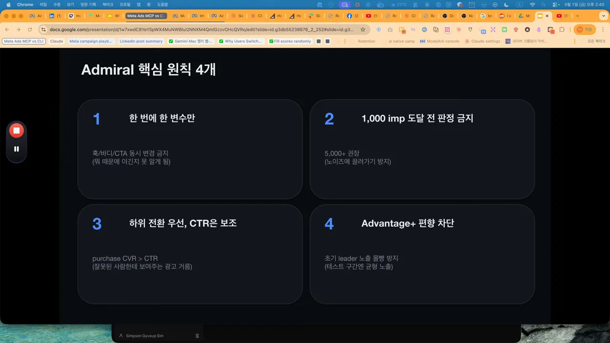
발표자는 4번을 두고, 알고리즘이 초기 1등에게 노출을 몰아주는 편향이 있다고 해요. 테스트 구간에서는 균형 노출을 강제해 보라는 거예요. 이것이 글로벌 상위권 운영자와 평범한 운영자가 갈리는 지점이라고 해요.
월요일에 오는 메시지
루틴 4의 Slack 메시지는 위에서부터 판정 순서대로 읽혀요. 노출 1,000회를 넘긴 테스트 자격 광고가 3개, 아직 학습 중이라 판정을 미룬 광고가 2개예요. 초록 칸 우승 후보(하위 전환 상위 30%)에는 ad_postit_winner_260427이 구매 전환율 4.2%, 노출 12,300회로 올라 있어요. 그 아래 '핵심' 줄이 왜 이겼는지예요. 손글씨 훅, 검은 배경, 12초 길이예요. 빨간 칸 탈락 후보(하위 30%)는 구매 전환율 1.1%예요. 맨 아래가 다음 사이클 가설이에요.
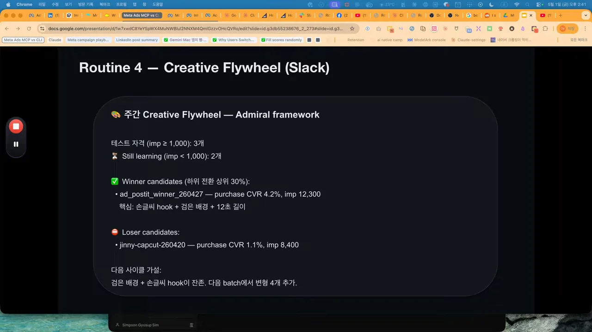
발표자에 따르면 Admiral Media는 일주일에 변형 40~100개를 테스트해요. AI가 만들어야만 가능한 속도이고, 이것이 2026년 마케터의 일하는 방식이라고 해요.
글로벌 레퍼런스와 정리
마지막으로 발표자는 공부하는 방식 이야기를 해요. 한국 마케팅 커뮤니티에도 잘 가르치는 사람이 많아요. 다만 글로벌 상위권이 어떻게 일하는지 모른 채 한국 안에서만 배우면 천장이 보일 수 있다고 해요. 한국 평균이 글로벌에서 어디쯤인지 가늠하기 어렵다는 거예요.
그래서 매일 보는 세 곳을 추천해요. 카드마다 가운데 파란 글씨가 찾아갈 주소이고, 아래 회색 글씨가 무엇으로 유명한지예요. 오늘 루틴 네 개의 프레임워크는 세 번째 Admiral Media에서 가져왔다고 해요.
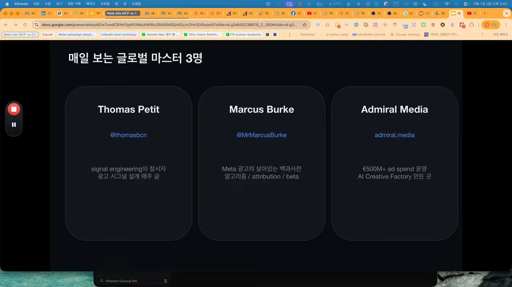
| 누구 | 발표자의 소개 |
|---|---|
| Thomas Petit | 시그널 엔지니어링이라는 개념을 만든 사람이에요. 알고리즘이 잘 배우도록 광고 신호를 어떻게 설계할지 다뤄요 |
| Marcus Burke | 메타 광고의 살아 있는 백과사전 같은 사람이에요. 알고리즘과 어트리뷰션 변화가 다 올라와요 |
| Admiral Media | 광고를 글로벌하게 운영하며 AI 크리에이티브 공장을 만든 곳이에요. 블로그가 아주 좋다고 해요 |
매일 세 곳을 30분 정도만 봐도 1년 안에 운영 능력이 두 단계쯤 올라갈 거라고 해요. 발표자 자신은 이런 관점들을 모아 Slack 채널로 받아 봐요. 요즘은 지식을 둘로 나누는 작업을 많이 한다고 해요. 내 머릿속에 넣어야 할 지식과, AI나 위키 같은 '외장 하드'에 넣어 둘 지식이에요.
정리
Claude 루틴 네 개, MCP, CLI, Slack, 그리고 휴먼 인 더 루프. 이 다섯을 합친 것이 마케터를 똑똑하고 게으르게 만드는 파이프라인이에요. 매일 4시간 쓰던 일을 30분으로 줄이고, 그 30분을 더 깊은 의사 결정에 쓰는 구조예요.
발표자는 다음 영상에서 루틴 하나를 처음부터 끝까지 따라 만드는 과정을 보여 주겠다고 해요. 어떤 루틴부터 보고 싶은지 댓글로 알려 달라고 하며 마무리해요.